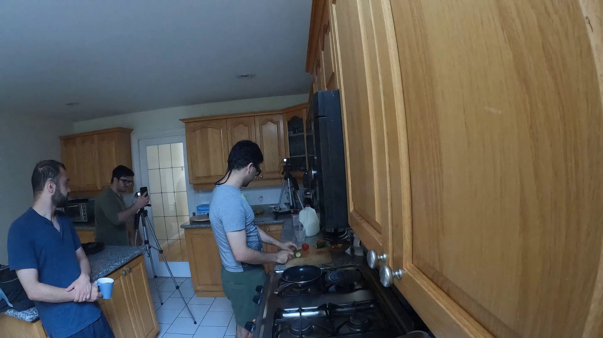
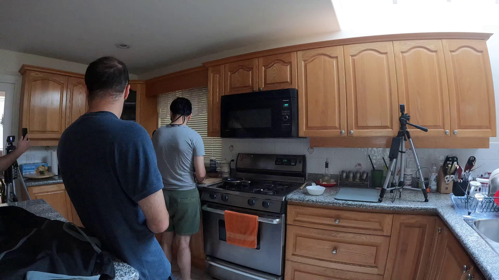
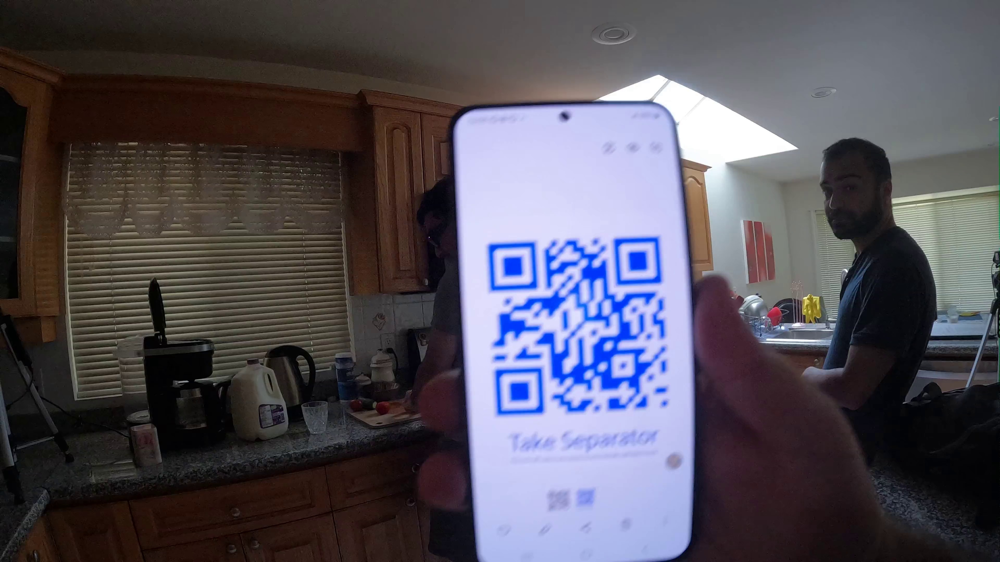
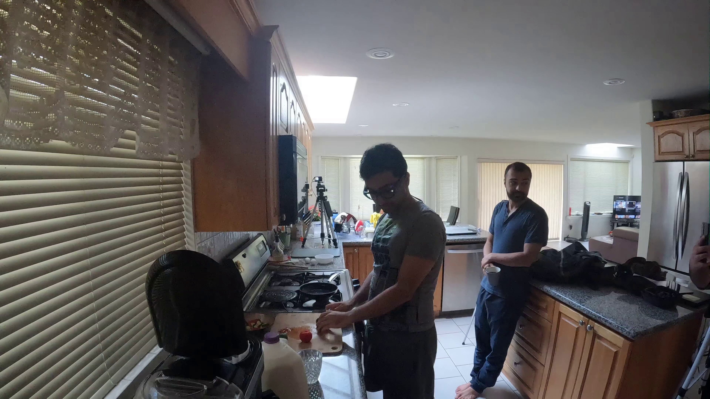
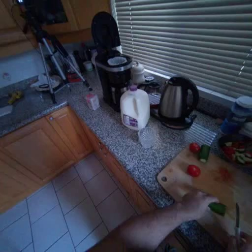

相机内容预览
顶部仅 cam01 保留视频用于查看动态内容；其他相机显示首帧。这里的 Aria 预览显示去畸变前的 resize 版本；下方 Aria/HFOV90 setting 的“实际输入首帧”才是去畸变后送入 VGGT-Omega 的版本。


4 路非 Aria 相机
复用之前只使用 cam01-cam04 的 VGGT-Omega 结果。
30 个时间点 · 120 张图 · 总计 93.3s · 推理 18.1s
实际输入首帧




单路 Aria RGB 去畸变 HFOV90
Aria 214-1 使用 no-image VRS 中 camera-rgb Fisheye624 标定，投影到 512x512 linear pinhole，HFOV=90。
30 个时间点 · 30 张图 · 总计 6.6s · 推理 1.9s
实际输入首帧

4 路非 Aria + Aria RGB 去畸变 HFOV90
cam01-cam04 与去畸变后的 Aria 214-1 RGB 同步 1fps 抽帧后合并输入。
30 个时间点 · 150 张图 · 总计 128.8s · 推理 45.4s
实际输入首帧